- Trae Code（原 Trae IDE，2026 年 8 月更名）面向程序员，是专业的 AI 编程工具；Trae Work 是 AI 工作助手，能整理论文综述、写 PPT、分析 Excel 等日常工作。
- Trae Code 排队很严重；Trae Work 排队一般几分钟，还能接受，日常用建议直接上 Trae Work。
- 建议选择
Deepseek v4 flash正式版或者GLM5.3，倍率低、性价比高。 - 8 月起改成积分制，每天签到领取积分，记得别断签。
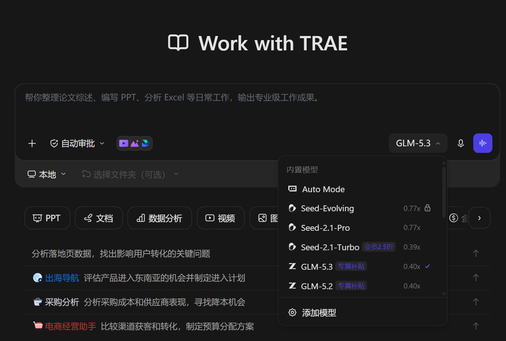
本攻略旨在分享稳定好用的大模型智能体词元来源，减小信息差，长期更新。 欢迎大家点赞、评论、转发，拿走不谢！
推荐先优先使用公益站的免费额度，不够再使用低价稳定的付费中转站。 中转站都是官方满血模型，不需要担心降智的问题。
先看完这三点，再往下挑渠道，能省掉大半踩坑时间。
优先把公益站的每日签到额度用掉，额度不够再上低价稳定的付费中转站，不必一开始就充钱。
这里列的中转站走的都是官方满血模型，和官方直连的效果一致，不存在阉割版的问题。
单站都有窗口和限额，建议同时准备 2~3 个渠道，用 cc-switch 一键切换，哪个通用哪个。
没有符合当前筛选条件的渠道，换个条件试试 🙃
大厂官方出品、不用折腾 API，注册即用的免费 Agent 产品。
Deepseek v4 flash 正式版或者 GLM5.3，倍率低、性价比高。
公益额度不够用时的兜底方案：按量计费、倍率低，全天候可用不看运气。
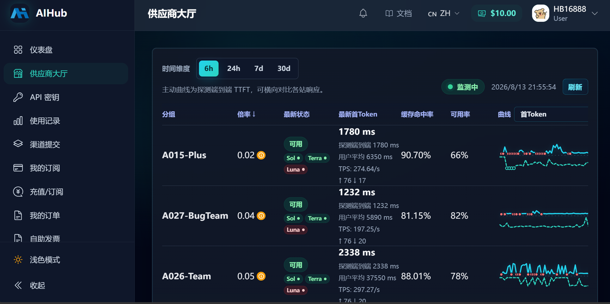
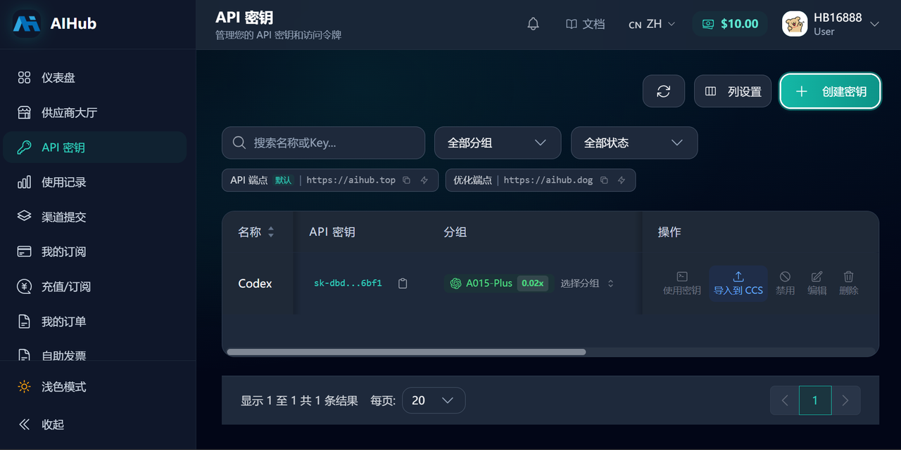
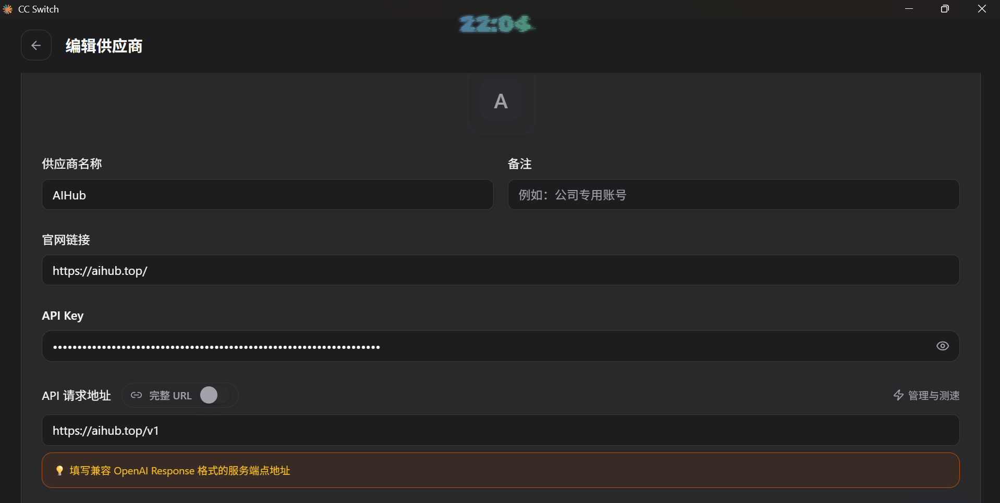
X-AI 特惠 分组倍率低到 0.04x，Grok 4.6 很便宜了，输入 ￥0.08 / 1M tokens。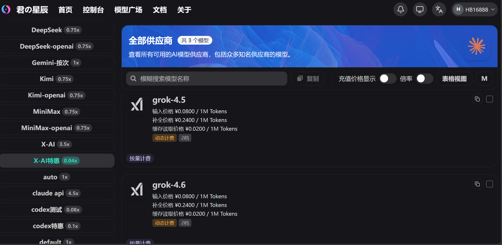
只要一个有年份的 GitHub 账号就能薅，每天签到就有额度，是最推荐的入门方式。
claude-opus-5-thinking。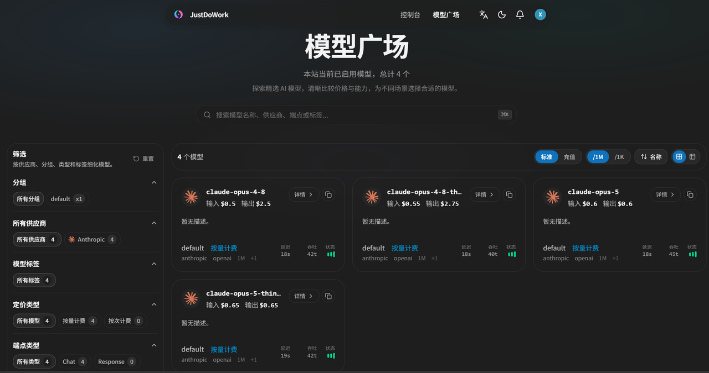
claude-opus-5-thinking。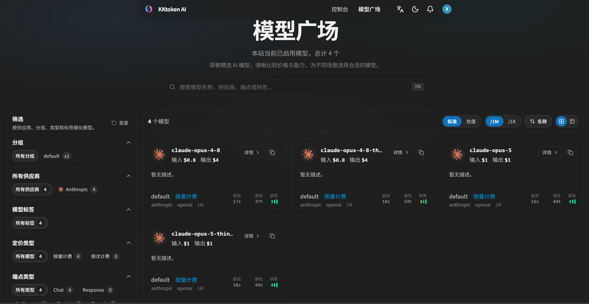
Deepseek v4 flash 和 GLM5.3，倍率低、不限量，体验更顺。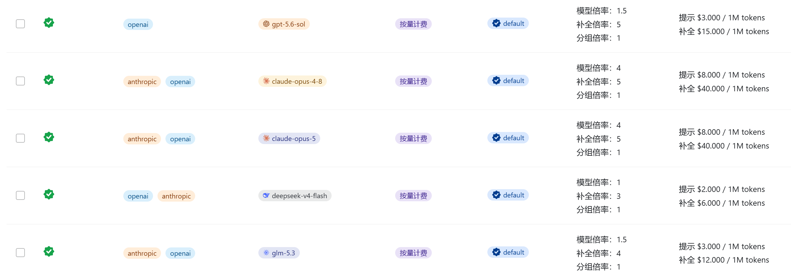
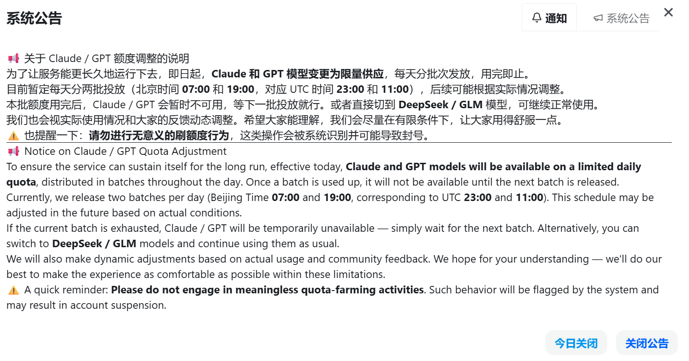
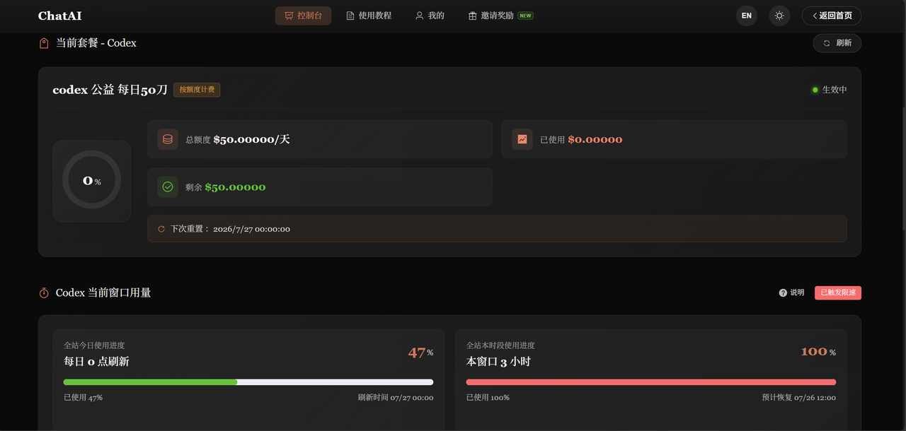
L 站（linux.do）上有很多大模型公益站的羊毛，需要有 L 站账号才能薅到。看上游渠道的账号，号多的时期就能爽用，号少的时期也能维持正常使用。
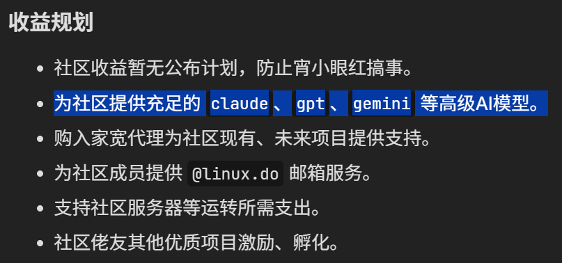
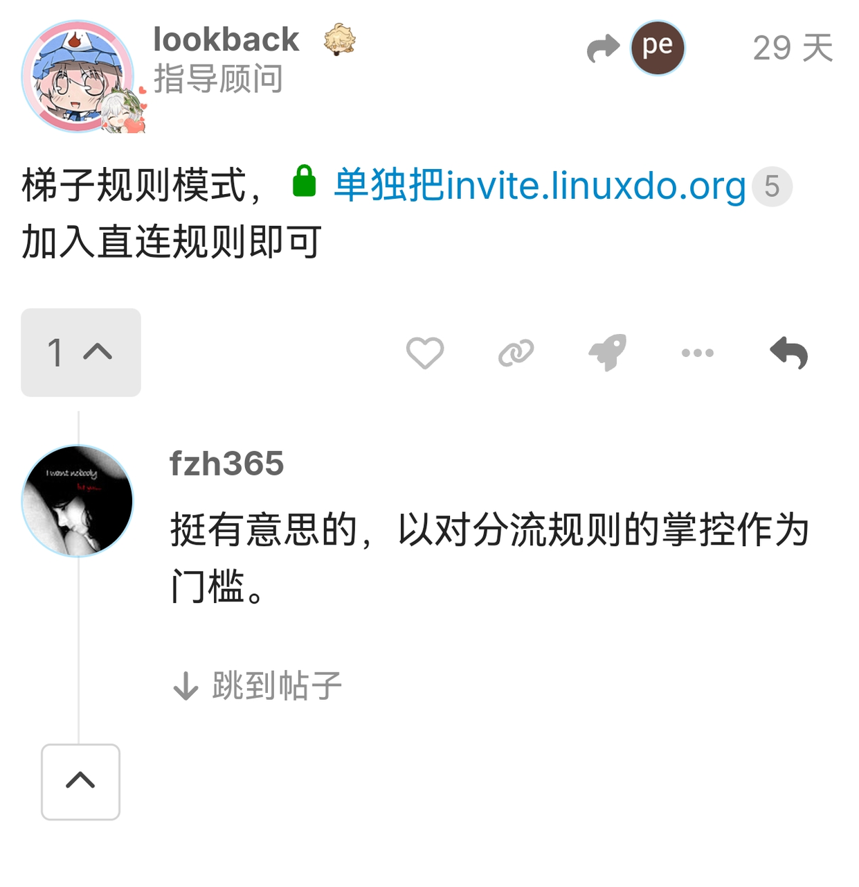
invite.linuxdo.org 单独加入梯子的直连规则即可走 官方注册入口 invite.linuxdo.org，用 GitHub 授权注册即可，账号年限够就能直接通过。社区主站是 linux.do。
去闲鱼搜「linux.do 邀请码」买一个高级邀请码，拿到码之后就可以直接用邮箱注册了，不再卡 GitHub 年限。
梯子规则模式下，把 invite.linuxdo.org 单独加入直连规则即可，看到「欢迎来到 LINUX DO」就算注册成功。
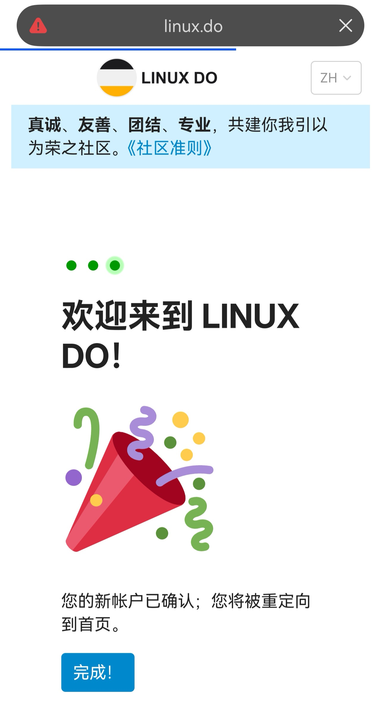
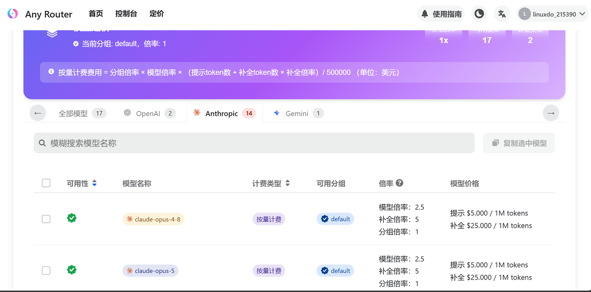
统一用 cc-switch 管理所有渠道，一键切换 Claude Code / Claude Desktop / Codex 的供应商，不用手动改配置文件。
跨平台桌面工具，支持 Claude Code、Codex、OpenCode 等客户端的供应商切换。
https://github.com/farion1231/cc-switch/releases比如 Claude Code、Claude Desktop 和 Codex，不同平台的供应商列表是分开维护的，别加错地方。
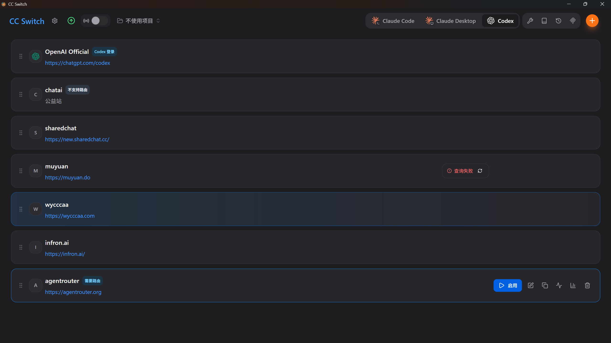
主要修改 API Key 和 API 请求地址。两类客户端的写法不一样，这是最容易踩的坑：
/v1，填 https://xxx.com/v1，且要填兼容 OpenAI Response 格式的服务端点地址。https://xxx.com，客户端会自己补后面的路径。默认模型留空则沿用配置里的第一行。
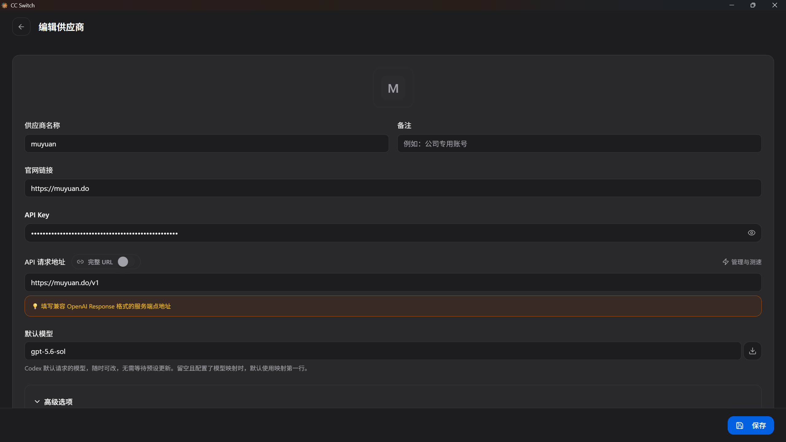
如果不是平台默认对应的模型，比如 kimi-k3 接入的时候需要修改模型映射。Claude Desktop 只接受 claude-sonnet-* / claude-opus-* / claude-haiku-* 三档角色 ID，开启映射后 cc-switch 会把这三档映射到供应商的实际模型。
Claude 系列模型需要勾选声明 1M 上下文，否则长上下文会被截断。
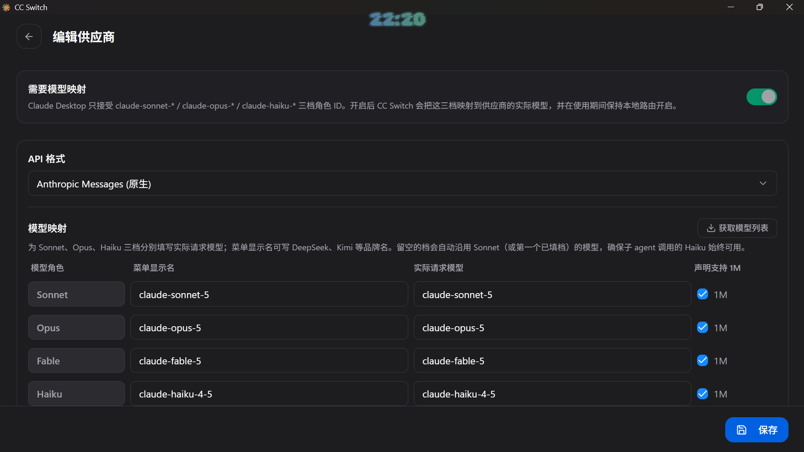
保存切换之后，关闭重新打开 Agent 工具，就能正常使用了。报错的话再根据错误提示进行分析 —— 常见原因是分组选错、Codex 的请求地址漏了 /v1（或 Claude 的地址反而多加了 /v1）、或者当前窗口额度已满。
攻略对你有帮助的话点个赞，让它能被更多人看到；知道其它免费 Token 渠道，欢迎直接在下面补充，也欢迎通过提 issue 或者 PR 提交渠道，共同维护。
点赞是最直接的反馈，也是我持续更新的动力 💪